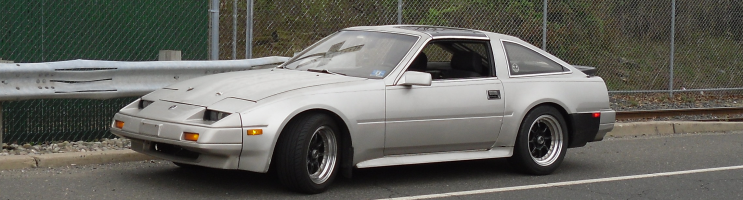

-
I'm in a bit of a pickle. My father and I where converting the subframe of my 86 back in the fall, before he passed away. We where about 2/3 done with the swap, the subframe back mounts are welded in and the subframe can hang from the struts. We started to cut away lightly at the frame rails to get clearance. I lack the skills to complete the job on my own, so i'm afraid I need to ask for help.
If someone owns a shop, and has an idea how to get the car on a trailer, i'm willing to help load it on the trailer, and of course, pay for the work to be completed. If someone was willing to come to my parents house, and help with the work, I can pay for there help also.
I really want to finish this, as it is the last project we started together, and he would have loved to see this finished.
I live in Middlesex county, New Jersey. The car is in a garage, that is a little tight, but enough room to move and maneuver, and I have a full set of tools.
I really hope someone can help me.
--Kevin 1986 RB20 300xz 2+2 -
The only tool you need to cut away the metal is a cutting wheel grinder…
I would suggest, you cut away where you need, and make the car roll, then take it somewhere that it can be patched up -
Take some pics of it's current state, and maybe we can help guide you a little better.sigpic -
If you want a shop to finish it contact liquid iron industries. -
Is the subframe able to be bolted in place? If so, that's the HARD part of the swap.Feedback- viewtopic.php?f=18&t=19840


Copyright © 2006–. All rights reserved. Privacy Policy